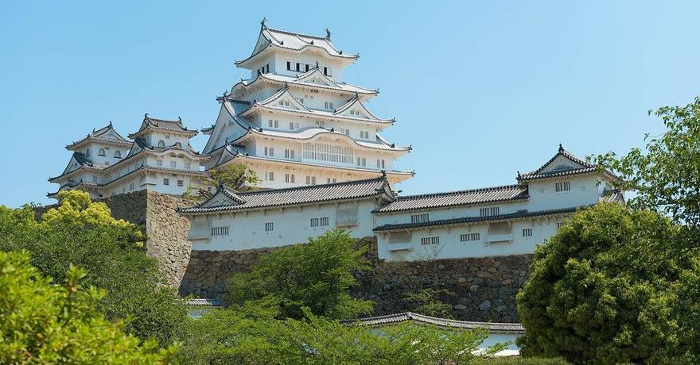
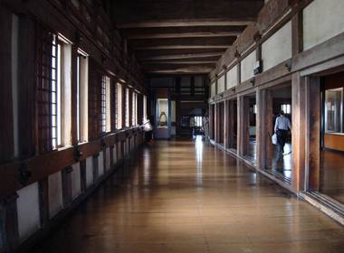

Le château d'himeji
Entouré de cerisiers, le château d'Himeji évoque immédiatement le Japon, son architecture si caractéristique et son histoire millénaire. Situé à Himeji, dans la préfecture de Hyōgo, cet imposant édifice en bois a été construit à l'époque Nanboku-chō de la période Muromachi, entre 1346 et 1618. C'est l'un des plus anciens bâtiments du Japon médiéval, l'un des douze châteaux japonais dont les donjons en bois existent toujours.
Un château qui a marqué l'histoire du Japon

Conçu au 14ème siècle, pendant la période Nanboku-chô (1333-1392), le château de Himeji fut le théâtre de nombreux événements historiques. Le site était une forteresse depuis la fin du 14ème siècle avant que le célèbre Ieyasu (le premier shogun de la dynastie Tokugawa) ne s'empare du bâtiment, qui fut bientôt agrandi avec l'impressionnant donjon de quatre étages en 1609 et de larges enceintes. Ieyasu Tokugawa fit don du château à son gendre en 1600, puis en 1618, les bâtiments de l'enceinte ouest furent érigés. Plus tard, le système hans (territoires des daimyo) a été aboli: le château a ensuite été vendu aux enchères. C'est à ce moment que l'armée occupa le château.
Jamais pris, jamais victime des tremblements de terre ni des incendies, il fut même épargné par les bombardements de 1945. À la fin du 19ème siècle, la ville décide de se charger de son entretien.
Le château restauré
Le château a profité de travaux de rénovation d'envergure, entre 2010 et 2015. Après 5 ans d'échafaudages, le château de Himeji a retrouvé son donjon, sa célèbre couleur blanche éclatante (ses murs sont blanchis à la chaux), et son surnom de "château du héron blanc" (Hakujoro en version originale).
Un château imprenable
Le château de Himeji est le plus grand château du Japon. Il fut bâti à 45 mètres de hauteur, surplombant la ville depuis le sommet de la colline Himeyama. Le donjon (tenshukaku) atteint en plus près de 46 mètres de haut. Le château est perché sur d'immenses murs en pierre incurvés, comparés à des éventails : si l'effet est saisissant, cette technique est pourtant uniquement pratique et non esthétique, car elle confère une plus grande solidité.
La visite du château demande environ 3 à 4 heures, surtout si l'on veut profiter d'une promenade dans les jardins du Kokô-en, créés en 1992 pour commémorer les 100 ans de la ville. Elle débute par la grande porte Hishinomon, percée dans d'épaisses murailles, qui donne accès aux douves intérieures de Sangoku-bori.
Mais les douves ne sont qu'une petite partie de l'exceptionnelle architecture défensive de Himeji, où l'on peut admirer de près les meurtrières (sur les murs d'enceinte). Vous emprunterez ensuite passages dérobés et chicanes, mais surtout le troublant labyrinthe qui mène au donjon principal du château : des chemins étroits et alambiqués aménagés pour éviter qu'une armée ne puisse accéder au cœur de l'ouvrage, qui abritait le seigneur et ses richesses.
En effet, ce plan labyrinthique constitue la défense la plus efficace du château : les ennemis devaient progresser selon un motif en spirale autour du donjon. Les allées sont de plus très étroites et abruptes, ce qui gênait l'avancée rapide d'une armée et permettait aux soldats du château de tirer sur les intrus à l'aide d'arquebuses et d'arcs.
Une architecture unique

En tout, le château est constitué de 83 bâtiments dont 16 tourelles et 15 portes. Sur 83 constructions, pas moins de 74 d'entre elles sont classées "Bien culturel important". L'ouvrage est immense, puisqu'il s'étend sur 1700 mètres de long.
Le grand donjon comporte 6 étages, qui, au fur et à mesure que l'on monte, sont de moins en moins grands : si le premier fait 550 m2 (et est recouvert de 330 tatamis), le dernier s'étend sur "seulement" 115 m2.
Vous aurez l'occasion d'observer de nombreuses installations défensives, comme des meurtrières de diverses formes ou encore des trappes et des machicoulis, destinées à jeter des pierres ou de l'huile bouillante. En outre, au premier étage se trouve le Musée des armes. Arrivé au dernier étage, vous serez récompensé par une belle vue sur la ville. Profitez-en aussi pour admirer les shashi-gawara, des motifs d'animaux mythiques en forme de poisson, réputés protéger le bâtiment du feu.